Face Sculpting Makeup by Volume Balance볼륨 밸런스 메이크업 가이드ボリュームバランス メイクガイド容积平衡 修容妆容指南體積平衡 修容妝容指南Maquillaje de esculpido facial por balance de volumenPanduan Makeup Sculpting Berdasarkan Keseimbangan Volume
Face Sculpting MakeupFace Sculpting MakeupFace Sculpting MakeupFace Sculpting MakeupFace Sculpting MakeupFace Sculpting Makeup
Highlight where volume helps, shade where it doesn't — region by region.볼륨을 더할 부위는 밝게, 덜어낼 부위는 음영으로 — 부위별로 정리했어요.ボリュームを足す部位は明るく、引く部位は影で — 部位別にまとめました。需要增加体积的部位提亮，需要减少的部位打阴影——按部位整理。需要增加體積的部位提亮，需要減少的部位打陰影——按部位整理。Ilumina donde falta volumen y sombrea donde sobra, zona por zona.Terangkan area yang perlu volume, beri bayangan pada area yang berlebih — per area.
Opened from your report, the regions the app flagged are highlighted and listed first.리포트에서 열면 앱이 판정한 부위가 강조되고 맨 위에 정리돼요.レポートから開くと、アプリが判定した部位が強調され上にまとまります。从报告打开时，应用判定的部位会被高亮并排在最前。從報告開啟時，App 判定的部位會被突顯並排在最前。Si lo abres desde tu informe, las zonas señaladas por la app se resaltan y aparecen primero.Jika dibuka dari laporan, area yang ditandai aplikasi akan disorot dan ditampilkan paling atas.
＋ Add = highlight / fill in보강 = 하이라이트·채우기補強 = ハイライト・埋める补强 = 提亮/填充補強 = 提亮/填充Reforzar = iluminar / rellenarPerkuat = highlight / isi
－ Reduce = shade / tone down여유 = 쉐딩·눌러 주기余裕 = シェーディング・抑える留白 = 阴影/收敛留白 = 陰影/收斂Suavizar = sombrear / rebajarKurangi = bayangan / redam
From your report내 리포트 판정あなたの判定你的判定你的判定Según tu informeDari laporanmu
Regions not listed were measured as balanced — keep them as they are.목록에 없는 부위는 균형 범위로 측정됐어요. 그대로 두면 돼요.一覧にない部位はバランス範囲でした。そのままでOK。未列出的部位处于平衡范围，保持即可。未列出的部位處於平衡範圍，保持即可。Las zonas no listadas se midieron equilibradas: déjalas como están.Area yang tidak tercantum terukur seimbang — biarkan apa adanya.
How to read this해석 방법見方解读方法解讀方式Cómo interpretarloCara membaca
Using the face mesh, we measure projection, hollows and width ratios by region and mark where adding (Add) or taking away (Reduce) volume would improve balance. Balanced ranges come from aesthetic references such as the facial convexity angle, the E-line, the ogee curve and the Goode ratio.얼굴 메시로 부위별 돌출·함몰·폭 비를 재어, 볼륨을 더하면(보강) 또는 덜어내면(여유) 입체 균형이 좋아지는 부위를 표시합니다. 균형 범위는 미용 해부학의 기준(옆얼굴 볼록각·E-라인·오지 커브·Goode 비율 등)에서 가져왔습니다.顔メッシュで部位ごとの突出・くぼみ・幅の比率を測り、ボリュームを足す（足す）か引く（引く）とバランスが良くなる部位を示します。バランス範囲は顔面凸角・Eライン・オジーカーブ・Goode比などの美容基準に基づきます。利用面部网格测量各部位的突出、凹陷和宽度比例，标出增加或减少饱满度能改善平衡的部位。均衡范围来自面部凸角、E线、Ogee曲线、Goode比例等美学参考。利用面部網格測量各部位的突出、凹陷和寬度比例，標出增加或減少飽滿度能改善平衡的部位。均衡範圍來自面部凸角、E線、Ogee曲線、Goode比例等美學參考。Con la malla facial medimos proyección, hundimientos y proporciones de anchura por zona y marcamos dónde añadir o reducir volumen mejoraría el equilibrio. Los rangos equilibrados proceden de referencias estéticas (ángulo de convexidad facial, línea E, curva ogee, proporción de Goode).Dengan mesh wajah, kami mengukur tonjolan, cekungan, dan rasio lebar per area, lalu menandai area yang akan lebih seimbang jika volumenya ditambah (Tambah) atau dikurangi (Kurangi). Rentang seimbang diambil dari acuan estetika seperti sudut konveksitas wajah, garis E, kurva ogee, dan rasio Goode.
The app's Add / Reduce labels are about balance, not about what is 'good' or 'bad'. Pick only the regions you want to change, and start with a light hand — the drawings show where, not how much.앱의 보강·여유는 균형 기준이지 좋고 나쁨이 아니에요. 바꾸고 싶은 부위만 고르고, 처음엔 옅게 시작하세요. 그림은 '어디에'를 보여 주지 '얼마나'를 정하진 않아요.アプリの補強・余裕はバランスの基準であって、良し悪しではありません。変えたい部位だけ選び、最初は薄く。図は「どこに」を示すもので「どれだけ」は決めません。应用中的补强/留白只是平衡的参考，不代表好坏。只挑想调整的部位，先从淡一点开始——图示说明的是"位置"，不是"程度"。App 中的補強/留白只是平衡的參考，不代表好壞。只挑想調整的部位，先從淡一點開始——圖示說明的是「位置」，不是「程度」。Reforzar y suavizar hablan de equilibrio, no de 'bien' o 'mal'. Elige solo las zonas que quieras cambiar y empieza con poca cantidad: los dibujos muestran dónde, no cuánto.Label perkuat / kurangi di aplikasi soal keseimbangan, bukan 'baik' atau 'buruk'. Pilih hanya area yang ingin diubah dan mulailah tipis — gambar menunjukkan di mana, bukan seberapa banyak.
Forehead이마額额头額頭FrenteDahi
ForeheadForeheadForeheadForeheadForeheadForehead
What the app measures앱이 재는 것アプリが測るもの应用测量的内容App 測量的內容Qué mide la appYang diukur aplikasiMeasures how rounded the forehead curve is from the brow to the top of the mesh (convexity, mm). 2.5–8 mm is balanced; flatter is marked as a region that would benefit from more volume.미간에서 이마 윗경계까지의 곡선이 얼마나 둥근지(볼록량, mm)를 잽니다. 2.5~8 mm를 균형으로 보고, 더 평평하면 볼륨을 더했을 때 균형이 좋아지는 부위로 표시합니다.眉間からメッシュ上端までの額のカーブの丸み（ふくらみ量, mm）を測ります。2.5〜8 mmをバランス範囲とし、それより平らならボリュームを足すと良い部位として示します。测量从眉间到网格顶端的额头曲线有多圆润（凸度，mm）。2.5–8 mm 为均衡；更平则标为增加饱满度会更好的部位。測量從眉間到網格頂端的額頭曲線有多圓潤（凸度，mm）。2.5–8 mm 為均衡；更平則標為增加飽滿度會更好的部位。Mide cuán redondeada es la curva de la frente desde el entrecejo hasta el borde superior (convexidad, mm). 2,5–8 mm es equilibrado; si es más plana se marca como zona que mejoraría con más volumen.Mengukur seberapa membulat lengkung dahi dari alis ke batas atas mesh (kecembungan, mm). 2,5–8 mm dianggap seimbang; lebih datar ditandai sebagai area yang akan lebih baik dengan tambahan volume.
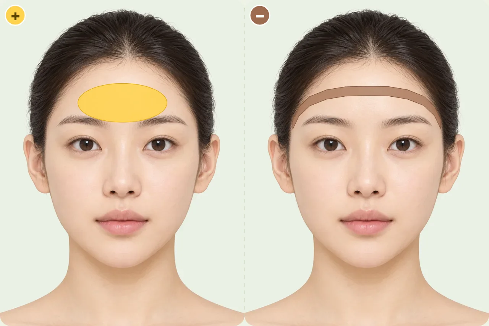
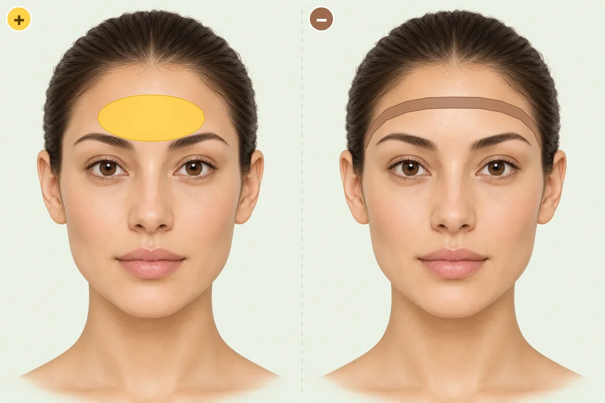
＋ Add: highlight / fill보강: 밝게·채우기補強: 明るく・埋める补强：提亮/填充補強：提亮/填充Reforzar: iluminar / rellenarPerkuat: highlight / isi－ Reduce: shade여유: 음영余裕: 影留白：阴影留白：陰影Suavizar: sombraKurangi: bayangan
＋ When it's Add (+)보강(+)일 때補強(+)のとき判定为补强(+)时判定為補強(+)時Si es Reforzar (+)Jika Perkuat (+)
- Sweep a light highlighter across the center of the forehead to bring out a rounded look.Keep the forehead highlight small and central — a wide glow across a longer forehead reads as shine rather than volume.이마 가운데에 밝은 하이라이터를 넓게 펴 바르면 둥근 볼륨감이 살아나요.額の中央に明るいハイライトを広めにのせると、丸みのある立体感が出ます。在额头中央大面积扫上浅色高光，能衬出圆润的饱满感。在額頭中央大面積掃上淺色高光，能襯出圓潤的飽滿感。Aplica iluminador claro en el centro de la frente para dar un efecto redondeado.Mantén el iluminador de la frente pequeño y central: un brillo amplio en una frente larga parece sudor, no volumen.Baurkan highlighter terang di tengah dahi agar terlihat lebih berisi.Jaga highlight dahi kecil dan di tengah — kilau lebar pada dahi yang panjang terbaca sebagai minyak, bukan volume.
- Fade the highlighter from the center outward — a visible edge kills the rounded look.하이라이터는 이마 중앙에서 바깥으로 갈수록 옅게 — 경계가 보이면 둥근 느낌이 깨져요.ハイライトは額の中央から外へ薄く — 境目が見えると丸みが崩れます。高光从额头中央向外渐淡——有边界就显不出圆润。高光從額頭中央向外漸淡——有邊界就顯不出圓潤。Difumina el iluminador del centro hacia fuera; un borde visible rompe el efecto redondeado.Baurkan highlighter dari tengah ke luar — garis tepi yang terlihat merusak kesan bulat.
－ When it's Reduce (−)여유(−)일 때余裕(−)のとき判定为留白(−)时判定為留白(−)時Si es Suavizar (−)Jika Kurangi (−)
- Add a thin line of contour just inside the hairline to soften the forehead.헤어라인 안쪽에 쉐딩을 얇게 넣어 이마 돌출을 눌러 주세요.生え際の内側に薄くシェーディングを入れ、額の張り出しを抑えます。在发际线内侧薄薄地打一层阴影，收敛额头的突出感。在髮際線內側薄薄地打一層陰影，收斂額頭的突出感。Aplica un poco de contorno junto a la línea del cabello para suavizar la frente.Tambahkan contour tipis di dalam garis rambut untuk meredam tonjolan dahi.
- Keep the shade to a 1 cm band inside the hairline — pulling it down toward the brows darkens the whole face.쉐딩은 헤어라인 안쪽 1cm 띠로만. 눈썹 쪽으로 내려오면 얼굴이 어두워 보여요.シェーディングはヘアライン内側1cmの帯だけ。眉まで下げると顔全体が暗く見えます。阴影只打在发际线内侧约1cm的带状区域，往眉毛方向拉会显得整张脸发暗。陰影只打在髮際線內側約1cm的帶狀區域，往眉毛方向拉會顯得整張臉發暗。Limita la sombra a una franja de 1 cm bajo el nacimiento del pelo; si baja hacia las cejas oscurece toda la cara.Batasi bayangan pada pita 1 cm di dalam garis rambut — jika turun ke alis, seluruh wajah tampak gelap.
Temples관자놀이こめかみ太阳穴太陽穴SienesPelipis
TemplesTemplesTemplesTemplesTemplesTemples
What the app measures앱이 재는 것アプリが測るもの应用测量的内容App 測量的內容Qué mide la appYang diukur aplikasiMeasures how deep the temple sits below the chord of a horizontal section at brow level (hollow depth, mm). Over 2 mm is marked as a region where added volume would soften the upper outline.눈썹 높이의 수평 단면에서 관자놀이가 얼마나 들어가 있는지(함몰 깊이, mm)를 잽니다. 2 mm를 넘으면 볼륨을 더했을 때 얼굴 윗부분의 선이 부드러워지는 부위로 표시합니다.眉の高さの水平断面で、こめかみが弦よりどれだけくぼんでいるか（深さ, mm）を測ります。2 mmを超えるとボリュームを足すと上部の輪郭がやわらぐ部位として示します。在眉毛高度的水平截面上测量太阳穴低于弦线的深度（凹陷，mm）。超过 2 mm 标为增加饱满度能柔和上部轮廓的部位。在眉毛高度的水平截面上測量太陽穴低於弦線的深度（凹陷，mm）。超過 2 mm 標為增加飽滿度能柔和上部輪廓的部位。Mide cuánto se hunde la sien respecto a la cuerda de una sección horizontal a la altura de la ceja (profundidad, mm). Más de 2 mm se marca como zona donde añadir volumen suavizaría el contorno superior.Mengukur seberapa dalam pelipis berada di bawah garis potong horizontal setinggi alis (kedalaman cekung, mm). Lebih dari 2 mm ditandai sebagai area yang garis atasnya akan lebih halus jika ditambah volume.
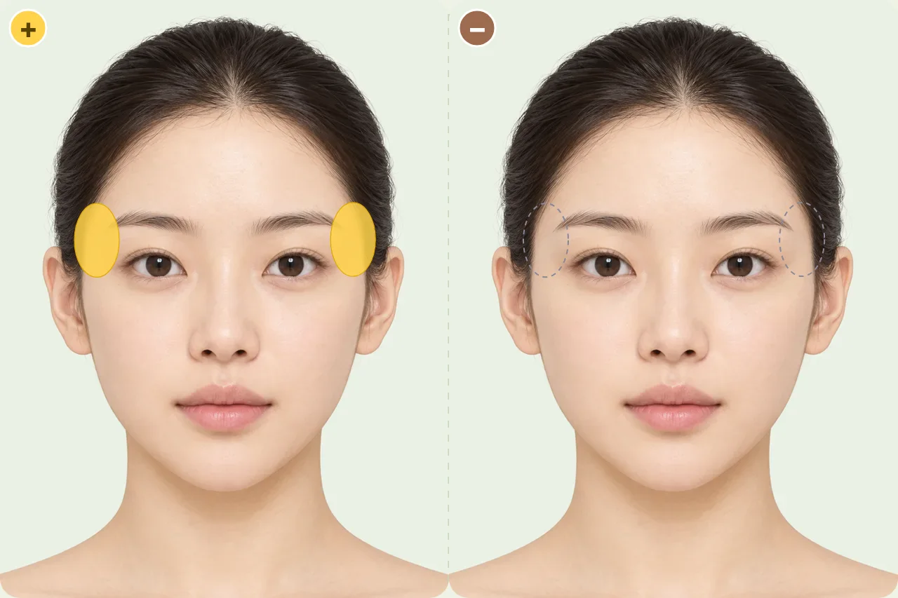
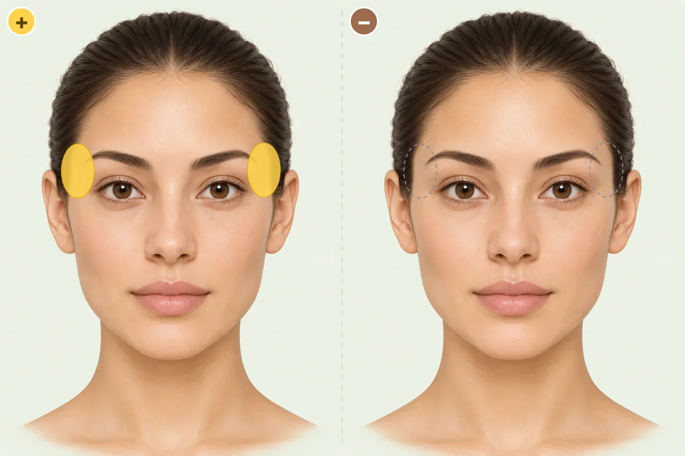
＋ Add: highlight / fill보강: 밝게·채우기補強: 明るく・埋める补强：提亮/填充補強：提亮/填充Reforzar: iluminar / rellenarPerkuat: highlight / isi－ Reduce: shade여유: 음영余裕: 影留白：阴影留白：陰影Suavizar: sombraKurangi: bayangan
＋ When it's Add (+)보강(+)일 때補強(+)のとき判定为补强(+)时判定為補強(+)時Si es Reforzar (+)Jika Perkuat (+)
- Fill the temples with concealer or highlighter one shade lighter than your skin.관자놀이에 피부보다 한 톤 밝은 컨실러나 하이라이터로 채워 주세요.こめかみに肌より1トーン明るいコンシーラーやハイライトをのせて埋めます。在太阳穴用比肤色亮一号的遮瑕或高光填补。在太陽穴用比膚色亮一號的遮瑕或高光填補。Rellena las sienes con corrector o iluminador un tono más claro que tu piel.Isi pelipis dengan concealer atau highlighter satu tingkat lebih terang dari kulit.
- Blend the edge toward the hairline so the hollow disappears instead of showing a patch.채운 뒤 경계를 헤어라인 쪽으로 블렌딩하면 함몰이 눈에 안 띄어요.埋めたら境目をヘアライン側へぼかすと、くぼみが目立ちません。填补后把边缘向发际线方向晕开，凹陷就不明显了。填補後把邊緣向髮際線方向暈開，凹陷就不明顯了。Difumina el borde hacia el nacimiento del pelo para que el hueco desaparezca sin dejar un parche.Baurkan tepinya ke arah garis rambut agar cekungan hilang tanpa terlihat bercak.
－ When it's Reduce (−)여유(−)일 때余裕(−)のとき判定为留白(−)时判定為留白(−)時Si es Suavizar (−)Jika Kurangi (−)
- The temples can be left as they are.관자놀이는 그대로 두어도 괜찮아요.こめかみはそのままで大丈夫です。太阳穴保持原样即可。太陽穴保持原樣即可。Las sienes pueden quedar como están.Pelipis bisa dibiarkan apa adanya.
- Temples aren't a shading target — just keep cheekbone shading from creeping up into them.관자놀이는 쉐딩 대상이 아니에요. 광대 쉐딩이 관자놀이까지 올라오지 않게만 주의하세요.こめかみはシェーディング対象ではありません。頬骨の影がこめかみまで上がらないようにだけ注意。太阳穴不需要打阴影，只要注意颧骨阴影别延伸到太阳穴。太陽穴不需要打陰影，只要注意顴骨陰影別延伸到太陽穴。Las sienes no se sombrean; solo evita que la sombra del pómulo suba hasta ellas.Pelipis bukan area bayangan — pastikan saja bayangan tulang pipi tidak naik ke pelipis.
Under-eye눈밑目の下眼下眼下Bajo los ojosBawah mata
Under-eyeUnder-eyeUnder-eyeUnder-eyeUnder-eyeUnder-eye
What the app measures앱이 재는 것アプリが測るもの应用测量的内容App 測量的內容Qué mide la appYang diukur aplikasiAlong a vertical line below the pupil, a reference line is drawn from the under-eye point to 18 mm below it, and the reading is how far the under-eye sinks in from that line (hollow depth, mm). Over 1.5 mm it is marked as an 'Add' area, where added light would soften the shadow; if the stretch below the love band (the top 4 mm) bulges more than 2 mm beyond the line, it is marked as a 'Reduce' area. It does not measure actual tissue volume or the love band right under the lashes.동공 아래 수직선에서 눈밑 기준점부터 18 mm 아래까지 이은 선을 기준으로, 눈밑이 얼마나 안쪽으로 패였는지(함몰 깊이, mm) 재요. 1.5 mm를 넘으면 빛을 더해 그늘을 줄일 '보강' 부위로 표시하고, 반대로 애교살 띠(기준점 아래 4 mm)를 뺀 구간이 선보다 2 mm 넘게 볼록하면 '여유' 부위로 표시해요. 실제 조직의 부피나 속눈썹 바로 아래 애교살 띠를 재는 건 아니에요.瞳の下の垂直線上で、目の下の基準点から18 mm下までを結んだ線を基準に、目の下がどれだけ内側にくぼんでいるか（くぼみの深さ、mm）を測ります。1.5 mmを超えると、光を足して影をやわらげる「足す」部位として表示し、逆に涙袋（基準点の下4 mm）を除いた区間が線より2 mm以上ふくらんでいれば「引く」部位として表示します。実際の組織の量や、まつ毛のすぐ下の涙袋を測るものではありません。在瞳孔下方的垂直线上，以眼下基准点到其下方 18 mm 连成的线为基准，测量眼下向内凹陷了多少（凹陷深度，mm）。超过 1.5 mm 会标为可通过补光减淡阴影的“增加”部位；反之，去掉卧蚕带（基准点下方 4 mm）后的区段若比基准线凸出超过 2 mm，则标为“减少”部位。它不测量实际组织体积，也不测量睫毛正下方的卧蚕。在瞳孔下方的垂直線上，以眼下基準點到其下方 18 mm 連成的線為基準，測量眼下向內凹陷了多少（凹陷深度，mm）。超過 1.5 mm 會標為可透過補光減淡陰影的「增加」部位；反之，去掉臥蠶帶（基準點下方 4 mm）後的區段若比基準線凸出超過 2 mm，則標為「減少」部位。它不測量實際組織體積，也不測量睫毛正下方的臥蠶。Sobre una línea vertical bajo la pupila se traza una referencia desde el punto bajo el ojo hasta 18 mm más abajo, y se mide cuánto se hunde la zona respecto a esa línea (profundidad del hueco, mm). Por encima de 1,5 mm se marca como zona de «Añadir», donde añadir luz suaviza la sombra; si el tramo por debajo de la banda del «aegyo-sal» (los 4 mm superiores) sobresale más de 2 mm de la línea, se marca como zona de «Reducir». No mide el volumen real del tejido ni la banda justo debajo de las pestañas.Pada garis vertikal di bawah pupil, ditarik garis acuan dari titik bawah mata sampai 18 mm di bawahnya, lalu diukur seberapa dalam bawah mata cekung dari garis itu (kedalaman cekungan, mm). Lebih dari 1,5 mm ditandai sebagai area 'Tambah', di mana menambah cahaya akan melembutkan bayangan; jika bagian di bawah pita aegyo-sal (4 mm teratas) menonjol lebih dari 2 mm melewati garis, ditandai sebagai area 'Kurangi'. Ini tidak mengukur volume jaringan sebenarnya maupun pita tepat di bawah bulu mata.
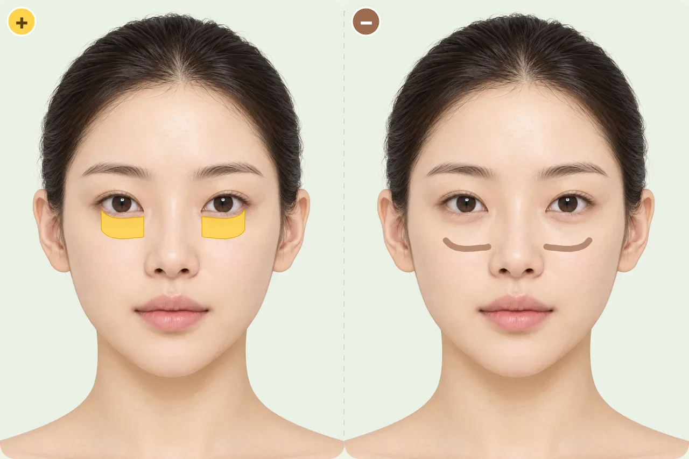
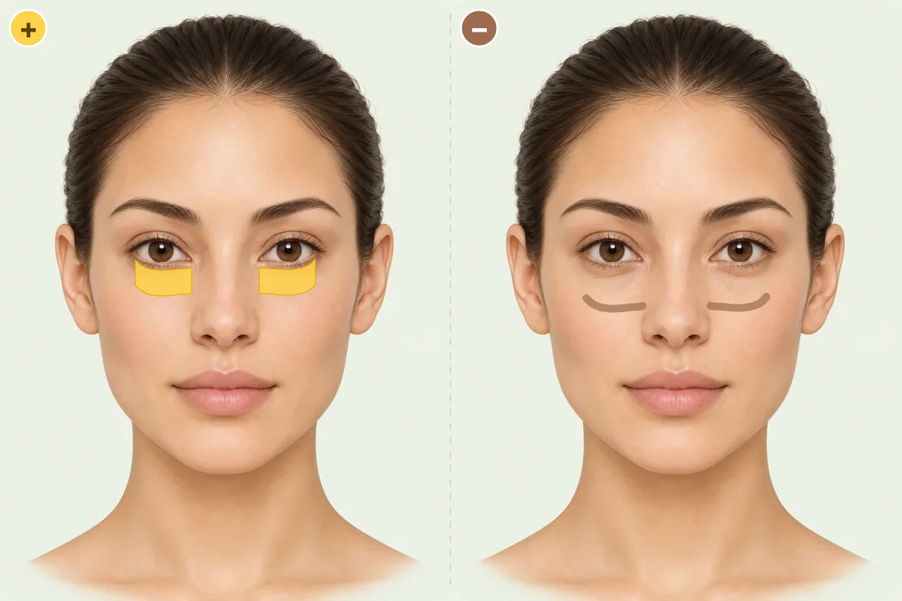
＋ Add: highlight / fill보강: 밝게·채우기補強: 明るく・埋める补强：提亮/填充補強：提亮/填充Reforzar: iluminar / rellenarPerkuat: highlight / isi－ Reduce: shade여유: 음영余裕: 影留白：阴影留白：陰影Suavizar: sombraKurangi: bayangan
＋ When it's Add (+)보강(+)일 때補強(+)のとき判定为补强(+)时判定為補強(+)時Si es Reforzar (+)Jika Perkuat (+)
- Layer a light concealer thinly along the under-eye hollow to lift the shadow.If the hollow looks bluish, lay a peach-toned corrector first, then a thin concealer only in the groove — skip the bright under-eye triangle.눈밑 함몰 라인을 따라 밝은 컨실러를 얇게 겹쳐 그늘을 지워 주세요.目の下のくぼみに沿って明るいコンシーラーを薄く重ね、影を消します。沿眼下凹陷处薄涂叠加浅色遮瑕，淡化阴影。沿眼下凹陷處薄塗疊加淺色遮瑕，淡化陰影。Aplica capas finas de corrector claro siguiendo el hueco bajo el ojo para borrar la sombra.Si el hueco se ve azulado, pon primero un corrector melocotón y luego corrector fino solo en el surco; evita el triángulo claro bajo el ojo.Lapisi tipis concealer terang mengikuti cekungan bawah mata untuk menghapus bayangan.Jika cekungan tampak kebiruan, pakai corrector peach dulu, lalu concealer tipis hanya di lekukan — lewati segitiga terang di bawah mata.
- Put concealer only in the hollow's groove, in two thin layers — not the whole under-eye triangle.컨실러는 눈밑 삼각형 전체가 아니라 함몰 라인 '골'에만 얇게 두 번 겹치세요.コンシーラーは目の下の三角ではなく、くぼみの「溝」だけに薄く2回重ねて。遮瑕只薄涂在凹陷的沟里、叠两层，不要铺满整个眼下三角区。遮瑕只薄塗在凹陷的溝裡、疊兩層，不要鋪滿整個眼下三角區。Aplica el corrector solo en el surco del hueco, en dos capas finas, no en todo el triángulo bajo el ojo.Oleskan concealer hanya di lekukan cekungan, dua lapis tipis — bukan seluruh segitiga bawah mata.
－ When it's Reduce (−)여유(−)일 때余裕(−)のとき判定为留白(−)时判定為留白(−)時Si es Suavizar (−)Jika Kurangi (−)
- A very light contour just below the puffy area makes it look flatter.눈밑 볼록한 부분 아래 경계에 아주 옅은 쉐딩으로 평평하게 보이게 해요.ふくらみの下の境目にごく薄いシェーディングを入れ、平らに見せます。在眼下凸起的下缘打极浅的阴影，让它看起来更平整。在眼下凸起的下緣打極淺的陰影，讓它看起來更平整。Un contorno muy suave justo debajo de la zona abultada la hace ver más plana.Contour sangat tipis tepat di bawah bagian yang menonjol membuatnya tampak lebih rata.
- A bright concealer on top of the bulge makes it look puffier — use a shade that matches your skin.밝은 컨실러를 볼록한 부분 위에 올리면 더 부풀어 보여요. 피부색 그대로의 톤을 쓰세요.ふくらみの上に明るいコンシーラーを乗せると余計に腫れて見えます。肌色と同じトーンで。在凸起处涂亮色遮瑕会更显肿，用与肤色一致的色号。在凸起處塗亮色遮瑕會更顯腫，用與膚色一致的色號。Un corrector claro sobre el abultamiento lo hincha más: usa un tono igual a tu piel.Concealer terang di atas tonjolan membuatnya tampak makin bengkak — pakai warna yang sama dengan kulit.
The love band is a different spot애교살은 다른 자리예요涙袋は別の場所です卧蚕是另一个位置臥蠶是另一個位置El «aegyo-sal» es otra zonaAegyo-sal adalah area yang berbedaThe app's under-eye reading is not the love band right under the lashes — it's the under-eye hollow that shadows below the pupil. So "add" means using concealer or a light product thinly so that shadow shows less. If you want to build a love band, the direction flips: keep the band itself bright (a soft matte or lightly shimmering light shade) and draw only a thin shadow line along its lower edge so it looks plump. On some faces that line sits close to the concealer zone, so keep both narrow so they don't overlap and turn muddy.앱의 '눈밑'은 속눈썹 바로 아래 애교살 띠가 아니라, 동공 아래로 패여 그늘지는 눈밑 함몰을 잽니다. 그래서 '보강'은 그 그늘이 덜 보이도록 컨실러나 밝은 제품을 얇게 쓰라는 뜻이에요. 애교살을 만들고 싶다면 방향이 반대예요. 띠 자체는 밝게(펄 없거나 은은한 밝은 섀도우), 띠 바로 아래 경계에만 가늘게 음영을 넣어 도톰해 보이게 하세요. 그 음영선은 사람에 따라 컨실러 자리와 가까워질 수 있으니, 둘이 겹쳐 탁해지지 않게 범위를 좁게 잡으세요.アプリの「目の下」は、まつ毛のすぐ下の涙袋ではなく、瞳の下でくぼんで影になる部分を測ります。「足す」はその影が目立たないよう、コンシーラーや明るい色を薄く使うという意味です。涙袋を作りたい場合は方向が逆です。袋自体は明るく（マットか控えめなパールの明るい色）、袋のすぐ下の境目にだけ細く影を入れてぷっくり見せます。その影の線は人によってコンシーラーの位置と近くなるので、重なって濁らないように両方とも範囲を狭くしてください。App 的“眼下”测的不是睫毛正下方的卧蚕，而是瞳孔下方凹陷成阴影的眼下区域。所以“补”指的是用遮瑕或浅色产品薄涂，让阴影不那么明显。想做出卧蚕，方向正好相反：卧蚕本身要亮（哑光或微珠光的浅色），只在卧蚕下缘画一条细细的阴影线让它显得饱满。这条线在有些人脸上会和遮瑕区域很近，两者都要画窄一些，避免重叠发脏。App 的「眼下」測的不是睫毛正下方的臥蠶，而是瞳孔下方凹陷成陰影的眼下區域。所以「補」指的是用遮瑕或淺色產品薄塗，讓陰影不那麼明顯。想做出臥蠶，方向正好相反：臥蠶本身要亮（霧面或微珠光的淺色），只在臥蠶下緣畫一條細細的陰影線讓它顯得飽滿。這條線在有些人臉上會和遮瑕區域很近，兩者都要畫窄一些，避免重疊發髒。El «bajo los ojos» de la app no es la banda justo debajo de las pestañas (el «aegyo-sal»), sino el hundimiento que se sombrea bajo la pupila. Por eso «rellenar» significa usar corrector o un producto claro en capa fina para que esa sombra se note menos. Si quieres marcar esa banda, la dirección se invierte: mantén la banda clara (un tono claro mate o con brillo suave) y traza solo una línea fina de sombra en su borde inferior para que se vea rellena. En algunos rostros esa línea queda cerca de la zona del corrector, así que mantén ambas estrechas para que no se solapen ni se ensucien.'Bawah mata' di aplikasi bukan pita tepat di bawah bulu mata (aegyo-sal), melainkan cekungan di bawah pupil yang membentuk bayangan. Jadi 'tambah' berarti memakai concealer atau produk terang secara tipis agar bayangan itu kurang terlihat. Kalau ingin membentuk aegyo-sal, arahnya kebalikan: biarkan pitanya terang (warna muda matte atau sedikit shimmer) dan buat hanya satu garis bayangan tipis di tepi bawahnya supaya terlihat penuh. Pada sebagian wajah garis itu dekat dengan area concealer, jadi buat keduanya sempit agar tidak tumpang tindih dan terlihat kotor.
Front cheek앞광대前頬骨前颧骨前顴骨Pómulo frontalPipi depan
Front cheeksFront cheeksFront cheeksFront cheeksFront cheeksFront cheeks
What the app measures앱이 재는 것アプリが測るもの应用测量的内容App 測量的內容Qué mide la appYang diukur aplikasiMeasures how convex the horizontal cheek contour is at the level midway between the under-eye and the nose base (mm). 2–7 mm is balanced; flatter is marked as a region that would gain dimension from added volume, more convex as having spare volume.눈밑과 코밑의 중간 높이에서 볼의 가로 단면이 얼마나 볼록한지(mm)를 잽니다. 2~7 mm를 균형으로 보고, 더 평평하면 볼륨을 더했을 때 입체감이 살아나는 부위로, 더 볼록하면 여유로 표시합니다.目の下と鼻下の中間の高さで、頬の水平断面がどれだけふくらんでいるか（mm）を測ります。2〜7 mmをバランス範囲とし、平らならボリュームを足すと立体感が出る部位、ふくらみが強ければ引く側として示します。在眼下与鼻底之间的高度测量脸颊水平轮廓的凸度（mm）。2–7 mm 为均衡；更平则标为增加饱满度能提升立体感的部位，更凸则标为可减少。在眼下與鼻底之間的高度測量臉頰水平輪廓的凸度（mm）。2–7 mm 為均衡；更平則標為增加飽滿度能提升立體感的部位，更凸則標為可減少。Mide cuán convexo es el contorno horizontal de la mejilla a media altura entre el párpado inferior y la base nasal (mm). 2–7 mm es equilibrado; si es más plano se marca como zona que ganaría volumen, y si es más convexo como zona con volumen de sobra.Mengukur seberapa cembung kontur horizontal pipi pada ketinggian di antara bawah mata dan pangkal hidung (mm). 2–7 mm dianggap seimbang; lebih datar ditandai sebagai area yang akan lebih berdimensi jika ditambah volume, lebih cembung sebagai area dengan volume berlebih.
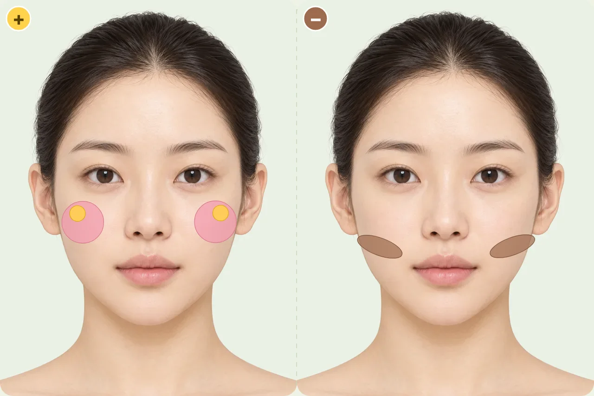
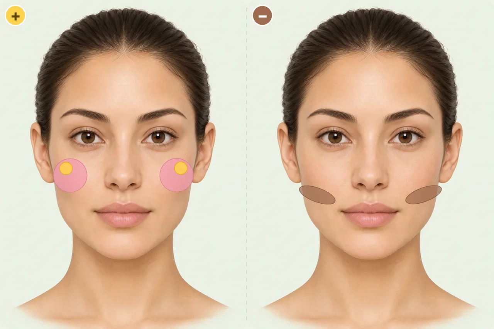
＋ Add: highlight / fill보강: 밝게·채우기補強: 明るく・埋める补强：提亮/填充補強：提亮/填充Reforzar: iluminar / rellenarPerkuat: highlight / isi－ Reduce: shade여유: 음영余裕: 影留白：阴影留白：陰影Suavizar: sombraKurangi: bayangan
＋ When it's Add (+)보강(+)일 때補強(+)のとき判定为补强(+)时判定為補強(+)時Si es Reforzar (+)Jika Perkuat (+)
- Highlighter on the highest point of the front cheek brings back dimension.Place blush on the apple and sweep it slightly up and out toward the cheekbone; a touch of highlighter on the high point keeps it lifted rather than round.앞광대 가장 높은 지점에 하이라이터를 올리면 입체감이 살아나요.前頬骨のいちばん高い位置にハイライトをのせると立体感が出ます。在前颧骨最高点扫上高光，立体感就回来了。在前顴骨最高點掃上高光，立體感就回來了。Iluminador en el punto más alto del pómulo frontal devuelve el volumen.Pon el colorete en la manzana y arrástralo un poco hacia arriba y afuera, hacia el pómulo; un toque de iluminador en el punto alto lo mantiene elevado, no redondo.Highlighter di titik tertinggi pipi depan mengembalikan dimensi wajah.Letakkan blush di apple cheek dan sapukan sedikit ke atas-luar ke arah tulang pipi; sedikit highlighter di titik tertinggi menjaga kesan terangkat, bukan bulat.
- Blush goes high and round on the cheek, with highlighter only on its single highest point.블러셔를 광대 위로 둥글게 올리고 하이라이터는 그 정점 한 점에만 올려요.チークは頬の高い位置に丸く、ハイライトはその頂点一点だけに。腮红在颧骨上方打圆形，高光只点在最高点一处。腮紅在顴骨上方打圓形，高光只點在最高點一處。El colorete va alto y redondeado en la mejilla, con iluminador solo en el punto más alto.Blush dibentuk bulat di atas pipi, highlighter hanya di satu titik tertinggi.
－ When it's Reduce (−)여유(−)일 때余裕(−)のとき判定为留白(−)时判定為留白(−)時Si es Suavizar (−)Jika Kurangi (−)
- Contour diagonally just under the front cheek to soften the projection.앞광대 아래쪽에 쉐딩을 사선으로 넣어 돌출을 부드럽게 눌러 주세요.前頬骨の下に斜めにシェーディングを入れ、張り出しをやわらげます。在前颧骨下方斜向打阴影，柔化突出感。在前顴骨下方斜向打陰影，柔化突出感。Aplica contorno en diagonal bajo el pómulo frontal para suavizar la proyección.Contour secara diagonal di bawah pipi depan untuk melembutkan tonjolan.
- Shade diagonally in the hollow just under the apple and skip highlighter on top of it.쉐딩은 앞광대 아래 그늘 자리에 사선으로 넣고, 광대 위 하이라이터는 생략하세요.影は頬の下の陰の位置に斜めに。頬の上のハイライトは省略。阴影斜打在苹果肌下方的凹陷处，颧骨上方不再提亮。陰影斜打在蘋果肌下方的凹陷處，顴骨上方不再提亮。Sombrea en diagonal justo bajo la manzana de la mejilla y omite el iluminador encima.Bayangan diagonal tepat di bawah apple cheek, dan lewati highlighter di atasnya.
Side cheekbone옆광대横頬骨侧颧骨側顴骨Pómulo lateralTulang pipi samping
Side cheekbonesSide cheekbonesSide cheekbonesSide cheekbonesSide cheekbonesSide cheekbones
What the app measures앱이 재는 것アプリが測るもの应用测量的内容App 測量的內容Qué mide la appYang diukur aplikasiCompares cheekbone width with forehead and jaw width. If the cheekbones exceed 1.15× the forehead or 1.5× the jaw, the side cheekbones are marked as prominent.광대폭을 이마폭·턱폭과 비교합니다. 광대폭이 이마폭의 1.15배 또는 턱폭의 1.5배를 넘으면 옆광대가 두드러지는 편으로 표시합니다.頬骨幅を額幅・顎幅と比べます。頬骨幅が額幅の1.15倍または顎幅の1.5倍を超えると横頬骨が目立つ側として示します。将颧骨宽度与额宽、下颌宽比较。颧宽超过额宽的 1.15 倍或下颌宽的 1.5 倍时，标为侧颧骨偏明显。將顴骨寬度與額寬、下頜寬比較。顴寬超過額寬的 1.15 倍或下頜寬的 1.5 倍時，標為側顴骨偏明顯。Compara la anchura de los pómulos con la de la frente y la mandíbula. Si supera 1,15× la frente o 1,5× la mandíbula, los pómulos laterales se marcan como prominentes.Membandingkan lebar tulang pipi dengan lebar dahi dan rahang. Jika melebihi 1,15× dahi atau 1,5× rahang, tulang pipi samping ditandai menonjol.
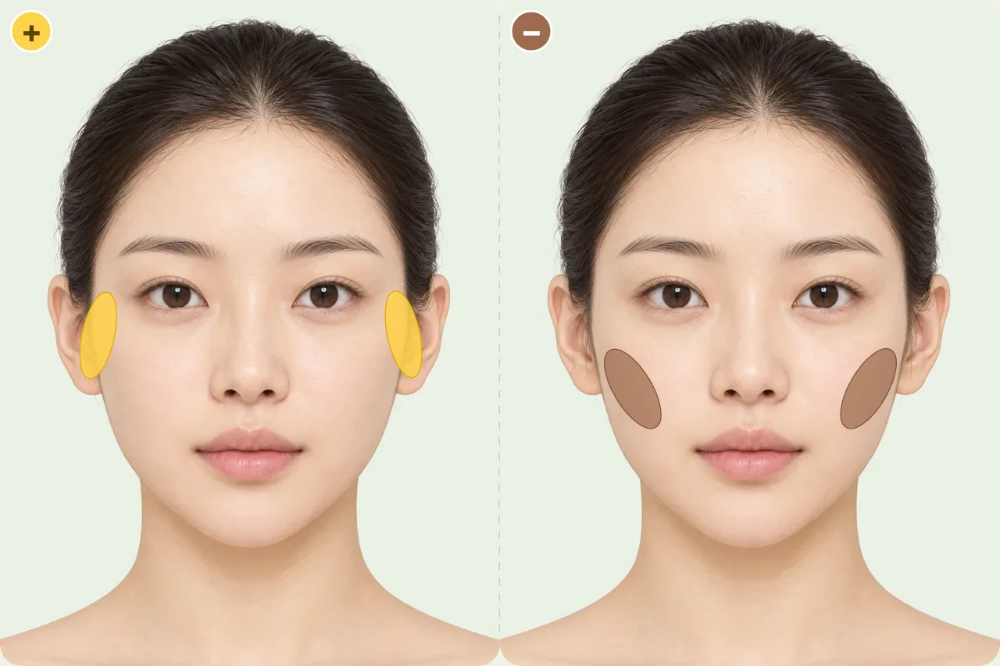
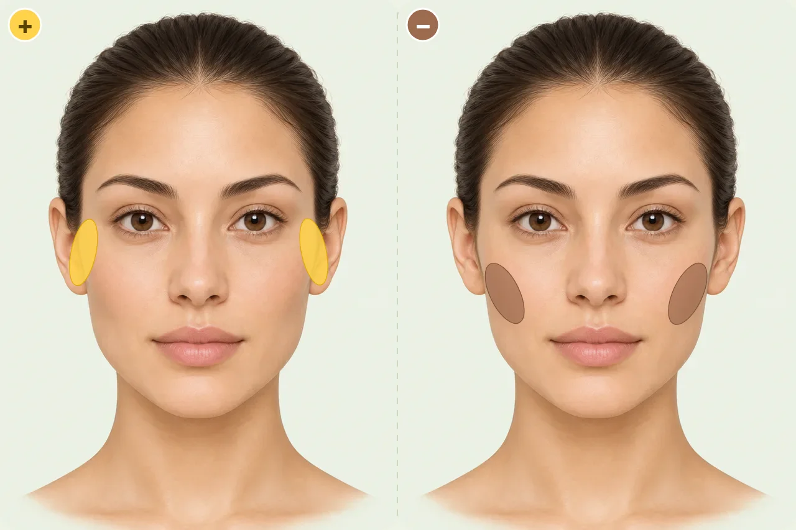
＋ Add: highlight / fill보강: 밝게·채우기補強: 明るく・埋める补强：提亮/填充補強：提亮/填充Reforzar: iluminar / rellenarPerkuat: highlight / isi－ Reduce: shade여유: 음영余裕: 影留白：阴影留白：陰影Suavizar: sombraKurangi: bayangan
＋ When it's Add (+)보강(+)일 때補強(+)のとき判定为补强(+)时判定為補強(+)時Si es Reforzar (+)Jika Perkuat (+)
- A long stroke of highlighter on the side cheekbone defines the outline.Highlight the top of the cheekbone and blend it back toward the temple — on a Western face the cheekbone usually sits higher and more forward, so lift it rather than widen it.옆광대에 하이라이터를 길게 넣어 얼굴 옆선을 살려 주세요.横頬骨にハイライトを長めに入れ、顔の輪郭を際立たせます。在侧颧骨拉长扫上高光，勾勒脸部侧线。在側顴骨拉長掃上高光，勾勒臉部側線。Un trazo largo de iluminador en el pómulo lateral define el contorno.Ilumina la parte alta del pómulo y difumina hacia la sien: en rostros occidentales el pómulo suele estar más alto y adelantado, así que elévalo en vez de ensancharlo.Sapuan panjang highlighter di tulang pipi samping menegaskan garis wajah.Terangkan bagian atas tulang pipi dan baurkan ke arah pelipis — pada wajah Barat tulang pipi biasanya lebih tinggi dan maju, jadi angkat, bukan lebarkan.
- A cream product half a shade lighter than your skin adds volume without shine, where highlighter may glare.하이라이터 대신 피부보다 반 톤 밝은 크림 제품을 쓰면 번들거림 없이 볼륨만 살아요.ハイライトの代わりに肌より半トーン明るいクリームを使うと、テカらずボリュームだけ出ます。用比肤色亮半个色号的膏状产品代替高光，不泛油光只显体积。用比膚色亮半個色號的膏狀產品代替高光，不泛油光只顯體積。Una crema medio tono más clara que tu piel da volumen sin brillo, cuando el iluminador deslumbra.Produk krim setengah tingkat lebih terang dari kulit menambah volume tanpa kilap, saat highlighter terlalu mencolok.
－ When it's Reduce (−)여유(−)일 때余裕(−)のとき判定为留白(−)时判定為留白(−)時Si es Suavizar (−)Jika Kurangi (−)
- Contour from the outer cheekbone toward the jaw to visually narrow the width.Shade just under the cheekbone (the classic contour hollow) rather than the outer edge — the width to soften usually sits in that hollow, not at the side.옆광대 바깥쪽에서 턱선 방향으로 쉐딩을 넣어 폭을 좁혀 보여 주세요.横頬骨の外側から顎に向けてシェーディングを入れ、幅を狭く見せます。从侧颧骨外侧向下颌方向打阴影，在视觉上收窄宽度。從側顴骨外側向下頜方向打陰影，在視覺上收窄寬度。Aplica contorno desde el pómulo externo hacia la mandíbula para estrechar visualmente.Sombrea justo debajo del pómulo (el hueco clásico del contouring) en lugar del borde exterior: el ancho a suavizar suele estar en ese hueco, no en el lateral.Contour dari tulang pipi luar ke arah rahang agar lebar wajah tampak lebih sempit.Beri bayangan tepat di bawah tulang pipi (cekungan contouring klasik), bukan di tepi luar — lebar yang perlu dilembutkan biasanya ada di cekungan itu.
- Start the shade at mid-ear height and aim it toward the mouth corner — running it down to the jaw lengthens the face.쉐딩 시작점은 귀 중간 높이, 끝은 입꼬리 방향 — 턱선까지 내리면 얼굴이 길어 보여요.影の始点は耳の中央の高さ、終点は口角方向へ。あごまで下ろすと顔が長く見えます。阴影从耳朵中部高度起笔，朝嘴角方向收——拉到下颌线会显脸长。陰影從耳朵中部高度起筆，朝嘴角方向收——拉到下頜線會顯臉長。Empieza la sombra a la altura media de la oreja y dirígela hacia la comisura; si llega a la mandíbula alarga la cara.Mulai bayangan dari tinggi tengah telinga menuju sudut bibir — jika sampai ke rahang, wajah tampak panjang.
Lower cheek아랫볼(볼살)頬の下部下颊（颊脂）下頰（頰脂）Mejilla inferiorPipi bawah
Lower cheeksLower cheeksLower cheeksLower cheeksLower cheeksLower cheeks
What the app measures앱이 재는 것アプリが測るもの应用测量的内容App 測量的內容Qué mide la appYang diukur aplikasiMeasures how far the cheek at mouth level projects beyond a vertical line from the cheekbone to the jaw border (mm, average of three lateral points). 6–12 mm is balanced; more indicates fuller cheeks (volume to spare), less indicates sunken cheeks. The range is still being calibrated on a small sample.광대 높이와 턱 경계를 잇는 세로 선에 비해 입 높이의 볼이 얼마나 앞으로 나와 있는지(mm, 가쪽 세 지점 평균)를 잽니다. 6~12 mm를 균형으로 보고, 더 나와 있으면 볼살이 많은 편(덜어내면 균형), 덜 나와 있으면 볼이 꺼진 편으로 표시합니다. 표본이 적어 기준은 조정 중입니다.頬骨と顎の境界を結ぶ縦線に対し、口の高さの頬がどれだけ前に出ているか（mm、外側3点の平均）を測ります。6〜12 mmをバランス範囲とし、それ以上は頬の肉が多い側（引くとバランス）、以下は頬がこけた側として示します。標本が少なく基準は調整中です。测量嘴部高度的脸颊相对于颧骨到下颌边缘垂线向前突出多少（mm，三个外侧点平均）。6–12 mm 为均衡；更多表示颊脂较多（可减少），更少表示脸颊凹陷。样本较少，范围仍在校准。測量嘴部高度的臉頰相對於顴骨到下頜邊緣垂線向前突出多少（mm，三個外側點平均）。6–12 mm 為均衡；更多表示頰脂較多（可減少），更少表示臉頰凹陷。樣本較少，範圍仍在校準。Mide cuánto sobresale la mejilla a la altura de la boca respecto a una vertical del pómulo al borde mandibular (mm, media de tres puntos laterales). 6–12 mm es equilibrado; más indica mejillas llenas (volumen de sobra), menos indica mejillas hundidas. El rango aún se calibra con una muestra pequeña.Mengukur seberapa jauh pipi setinggi mulut menonjol melewati garis vertikal dari tulang pipi ke tepi rahang (mm, rata-rata tiga titik lateral). 6–12 mm dianggap seimbang; lebih besar berarti pipi penuh (volume berlebih), lebih kecil berarti pipi cekung. Rentang masih dikalibrasi dengan sampel kecil.
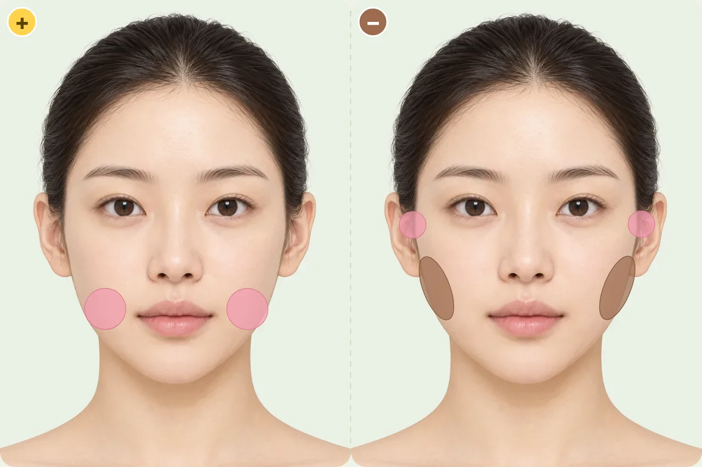
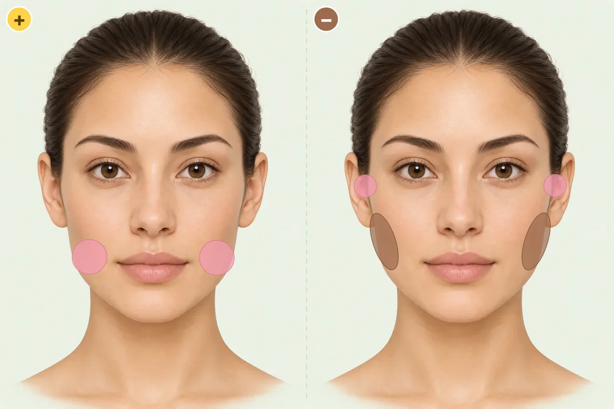
＋ Add: highlight / fill보강: 밝게·채우기補強: 明るく・埋める补强：提亮/填充補強：提亮/填充Reforzar: iluminar / rellenarPerkuat: highlight / isi－ Reduce: shade여유: 음영余裕: 影留白：阴影留白：陰影Suavizar: sombraKurangi: bayangan
＋ When it's Add (+)보강(+)일 때補強(+)のとき判定为补强(+)时判定為補強(+)時Si es Reforzar (+)Jika Perkuat (+)
- If the lower cheeks look hollow, dab cream blush in a round shape beside the mouth corners to fill them in.아랫볼이 꺼져 보이면 입꼬리 옆 볼에 크림 블러셔를 둥글게 올려 채워 주세요.頬の下部がこけて見えるなら、口角の横にクリームチークを丸くのせて埋めます。下颊显凹陷时，在嘴角旁用膏状腮红打圆填补。下頰顯凹陷時，在嘴角旁用膏狀腮紅打圓填補。Si las mejillas inferiores se ven hundidas, aplica colorete en crema en forma redonda junto a las comisuras.Jika pipi bawah tampak cekung, bubuhkan cream blush berbentuk bulat di samping sudut mulut untuk mengisinya.
- Pat cream blush onto the spot that rises when you smile — it reads fuller than powder.크림 블러셔를 웃을 때 올라오는 볼 위치에 손가락으로 톡톡 — 파우더보다 자연스럽게 차 보여요.笑ったとき盛り上がる位置にクリームチークを指でトントン。パウダーよりふっくら見えます。在微笑时鼓起的位置用手指轻拍膏状腮红，比粉状更显饱满。在微笑時鼓起的位置用手指輕拍膏狀腮紅，比粉狀更顯飽滿。Da toques de colorete en crema donde la mejilla sube al sonreír: se ve más lleno que el polvo.Tepuk cream blush di titik pipi yang naik saat tersenyum — tampak lebih penuh daripada bedak.
－ When it's Reduce (−)여유(−)일 때余裕(−)のとき判定为留白(−)时判定為留白(−)時Si es Suavizar (−)Jika Kurangi (−)
- Contour diagonally from under the cheekbone toward the jaw and keep blush high on the cheekbone to slim the lower cheek.광대 아래에서 턱선 쪽으로 사선 쉐딩을 넣고 블러셔는 광대 위쪽에만 올리면 아랫볼이 가벼워 보여요.頬骨の下から顎に向けて斜めにシェーディングを入れ、チークは頬骨の上だけにのせると頬の下部がすっきり見えます。从颧骨下方向下颌斜向打阴影，腮红只扫在颧骨上方，下颊会显得轻盈。從顴骨下方向下頜斜向打陰影，腮紅只掃在顴骨上方，下頰會顯得輕盈。Aplica contorno en diagonal desde debajo del pómulo hacia la mandíbula y mantén el colorete alto para afinar la mejilla inferior.Contour diagonal dari bawah tulang pipi ke arah rahang dan letakkan blush hanya di bagian atas pipi agar pipi bawah tampak lebih ramping.
- Keep blush high on the cheekbone — dragging it toward the lower cheek makes it look heavier.블러셔는 광대 위쪽에만 올리세요. 아랫볼 쪽으로 내려 바르면 더 처져 보여요.チークは頬骨の上側だけ。下のほうに広げるとたるんで見えます。腮红只打在颧骨上方，往下腮方向涂会显得更垂。腮紅只打在顴骨上方，往下腮方向塗會顯得更垂。Mantén el colorete alto en el pómulo; si baja hacia la mejilla inferior la hace más pesada.Jaga blush tetap tinggi di tulang pipi — menariknya ke pipi bawah membuatnya tampak lebih berat.
Nose코鼻鼻子鼻子NarizHidung
NoseNoseNoseNoseNoseNose
What the app measures앱이 재는 것アプリが測るもの应用测量的内容App 測量的內容Qué mide la appYang diukur aplikasiUses the Goode ratio (nasal projection ÷ nasal length), the same value as in the golden ratio table. On this app's scale 0.42–0.66 is balanced; lower is marked as a region that would benefit from more height.코 돌출을 코 길이로 나눈 Goode 비율로 봅니다(황금비 표와 같은 값). 앱 측정 기준 0.42~0.66을 균형으로 보고, 낮으면 높이를 더했을 때 균형이 좋아지는 부위로 표시합니다.鼻の突出を鼻の長さで割ったGoode比で見ます（黄金比の表と同じ値）。このアプリの基準では0.42〜0.66をバランス範囲とし、低ければ高さを足すと良い部位として示します。采用 Goode 比例（鼻突出 ÷ 鼻长），与黄金比例表中的数值相同。按本应用的尺度 0.42–0.66 为均衡；偏低则标为增加高度会更好的部位。採用 Goode 比例（鼻突出 ÷ 鼻長），與黃金比例表中的數值相同。按本應用的尺度 0.42–0.66 為均衡；偏低則標為增加高度會更好的部位。Usa la proporción de Goode (proyección nasal ÷ longitud nasal), el mismo valor de la tabla de proporción áurea. En la escala de la app 0,42–0,66 es equilibrado; si es menor se marca como zona que mejoraría con más altura.Menggunakan rasio Goode (tonjolan hidung ÷ panjang hidung), nilai yang sama dengan tabel rasio emas. Pada skala aplikasi ini 0,42–0,66 dianggap seimbang; lebih rendah ditandai sebagai area yang lebih baik dengan tambahan tinggi.
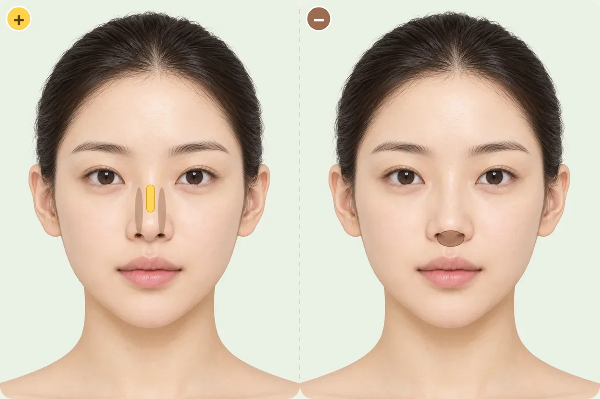
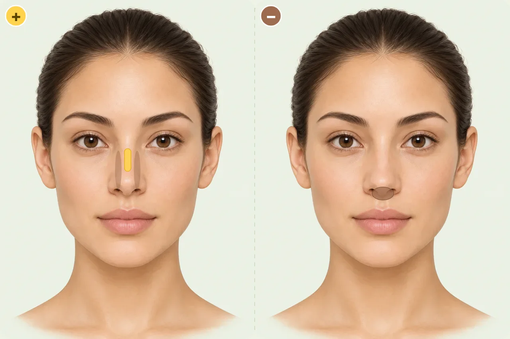
＋ Add: highlight / fill보강: 밝게·채우기補強: 明るく・埋める补强：提亮/填充補強：提亮/填充Reforzar: iluminar / rellenarPerkuat: highlight / isi－ Reduce: shade여유: 음영余裕: 影留白：阴影留白：陰影Suavizar: sombraKurangi: bayangan
＋ When it's Add (+)보강(+)일 때補強(+)のとき判定为补强(+)时判定為補強(+)時Si es Reforzar (+)Jika Perkuat (+)
- A thin highlight down the bridge with contour on both sides adds height.If the bridge is already high, skip the long bridge highlight — a short touch between the brows and a soft tip highlight are enough; heavy side shading reads as makeup.콧대 가운데에 하이라이터를 가늘게 넣고 양옆에 쉐딩을 더해 높이를 살려요.鼻筋の中央に細くハイライト、両脇にシェーディングで高さを出します。鼻梁中央细细打高光，两侧加阴影，衬出高度。鼻樑中央細細打高光，兩側加陰影，襯出高度。Un iluminador fino en el puente y contorno a ambos lados dan altura.Si el puente ya es alto, omite el iluminador largo: basta un toque entre las cejas y otro suave en la punta; una sombra lateral fuerte se nota como maquillaje.Highlight tipis di batang hidung dengan contour di kedua sisi menambah kesan tinggi.Jika batang hidung sudah tinggi, lewati highlight panjang — cukup sedikit di antara alis dan di ujung; bayangan samping yang tebal terlihat seperti makeup.
- Keep the bridge highlight thin, from the brow gap down to just above the tip — reaching the tip lengthens the nose.콧대 하이라이트는 미간부터 코끝 직전까지 가늘게. 코끝까지 이으면 코가 길어 보여요.鼻筋のハイライトは眉間から鼻先の手前まで細く。鼻先までつなぐと鼻が長く見えます。鼻梁高光从眉心细细画到鼻尖之前，连到鼻尖会显鼻子长。鼻樑高光從眉心細細畫到鼻尖之前，連到鼻尖會顯鼻子長。El iluminador del puente va fino desde el entrecejo hasta justo antes de la punta; si llega a la punta alarga la nariz.Highlight batang hidung dibuat tipis dari antara alis sampai tepat sebelum ujung — jika sampai ujung, hidung tampak panjang.
－ When it's Reduce (−)여유(−)일 때余裕(−)のとき判定为留白(−)时判定為留白(−)時Si es Suavizar (−)Jika Kurangi (−)
- Skip the bridge highlight and add light contour on the tip to reduce projection.Shade the sides of the tip rather than the bridge, and leave the bridge highlight off entirely.콧대 하이라이트는 생략하고 코끝에 옅은 쉐딩을 넣어 돌출을 눌러요.鼻筋のハイライトは省き、鼻先に薄くシェーディングを入れて突出を抑えます。省去鼻梁高光，在鼻尖打浅阴影收敛突出感。省去鼻樑高光，在鼻尖打淺陰影收斂突出感。Omite el iluminador del puente y aplica contorno suave en la punta.Sombrea los lados de la punta, no el puente, y omite por completo el iluminador del puente.Lewati highlight batang hidung dan beri contour tipis di ujung untuk meredam tonjolan.Beri bayangan di sisi ujung hidung, bukan batang, dan lewati highlight batang hidung sepenuhnya.
- Tip shading is a fingernail-sized touch under the tip, between the nostrils — done right, it's barely visible after blending.코끝 쉐딩은 콧방울 사이 아래쪽에 손톱만큼만. 블렌딩 후 거의 안 보여야 성공이에요.鼻先の影は小鼻の間の下に爪ほどの大きさだけ。ぼかしてほぼ見えなくなれば成功。鼻尖阴影只在两鼻翼之间的下方点指甲大小，晕开后几乎看不见才对。鼻尖陰影只在兩鼻翼之間的下方點指甲大小，暈開後幾乎看不見才對。La sombra de la punta es un toque del tamaño de una uña bajo la punta; bien difuminada apenas se nota.Bayangan ujung hidung hanya sebesar kuku di bawah ujung, di antara cuping — setelah dibaurkan hampir tak terlihat.
Lips입술唇嘴唇嘴唇LabiosBibir
LipsLipsLipsLipsLipsLips
What the app measures앱이 재는 것アプリが測るもの应用测量的内容App 測量的內容Qué mide la appYang diukur aplikasiMeasures how far the upper and lower lips sit behind the E-line from nose tip to chin (mm). For East Asian faces, upper −1 to 5 mm and lower −2 to 4 mm is balanced.코끝과 턱끝을 잇는 E-라인에서 윗입술·아랫입술이 얼마나 뒤에 있는지(mm)를 잽니다. 동양인 기준으로 윗 −1~5 mm, 아랫 −2~4 mm를 균형으로 봅니다.鼻先と顎先を結ぶEラインから上唇・下唇がどれだけ後ろにあるか（mm）を測ります。東アジア人基準で上 −1〜5 mm、下 −2〜4 mmをバランス範囲とします。测量上唇、下唇位于鼻尖—下巴 E 线后方多少（mm）。按东亚面孔标准，上唇 −1~5 mm、下唇 −2~4 mm 为均衡。測量上唇、下唇位於鼻尖—下巴 E 線後方多少（mm）。按東亞面孔標準，上唇 −1~5 mm、下唇 −2~4 mm 為均衡。Mide cuánto quedan los labios superior e inferior detrás de la línea E (punta de la nariz–mentón, mm). Para rostros asiáticos, superior −1 a 5 mm e inferior −2 a 4 mm es equilibrado.Mengukur seberapa jauh bibir atas dan bawah berada di belakang garis E dari ujung hidung ke dagu (mm). Untuk wajah Asia Timur, atas −1 hingga 5 mm dan bawah −2 hingga 4 mm dianggap seimbang.
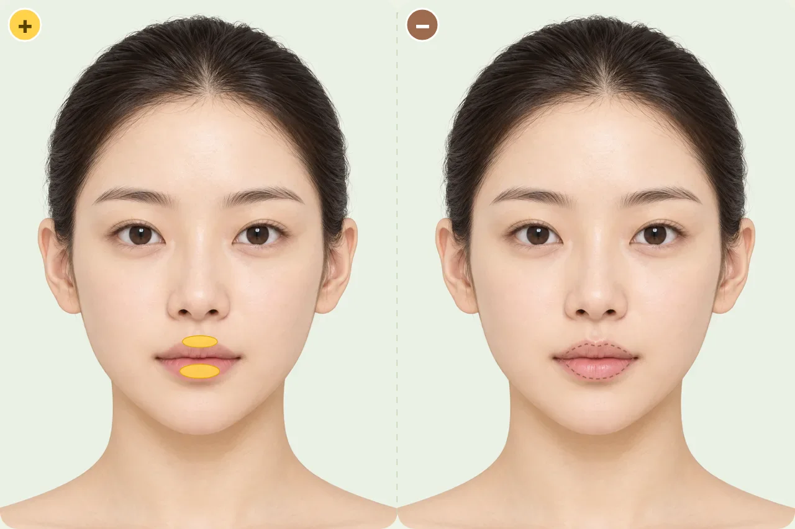
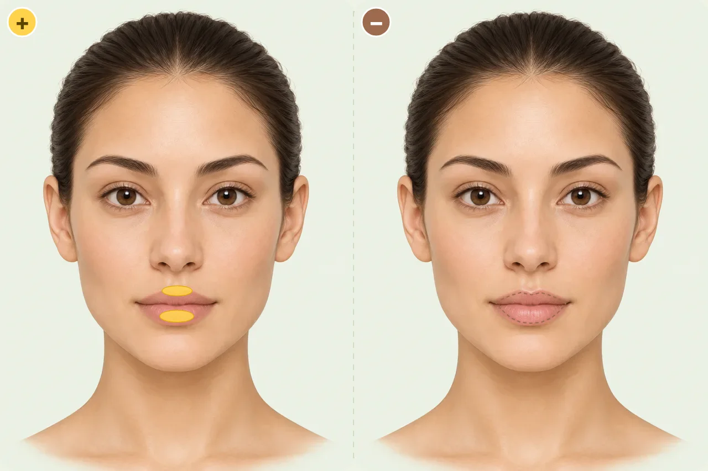
＋ Add: highlight / fill보강: 밝게·채우기補強: 明るく・埋める补强：提亮/填充補強：提亮/填充Reforzar: iluminar / rellenarPerkuat: highlight / isi－ Reduce: shade여유: 음영余裕: 影留白：阴影留白：陰影Suavizar: sombraKurangi: bayangan
＋ When it's Add (+)보강(+)일 때補強(+)のとき判定为补强(+)时判定為補強(+)時Si es Reforzar (+)Jika Perkuat (+)
- Gloss or a lighter shade on the cupid's bow and center of the lower lip adds fullness.Overline a hair outside the natural edge at the center only, then add gloss — volume without a drawn-on look.입술 산과 아랫입술 가운데에 글로스나 밝은 컬러를 올려 볼륨감을 더해요.唇の山と下唇の中央にグロスや明るい色をのせ、ボリューム感を足します。在唇峰和下唇中央点上唇蜜或浅色，增加饱满感。在唇峰和下唇中央點上唇蜜或淺色，增加飽滿感。Gloss o un tono más claro en el arco de Cupido y el centro del labio inferior dan volumen.Perfila un pelo por fuera del borde natural solo en el centro y añade gloss: volumen sin parecer dibujado.Gloss atau warna lebih terang di cupid's bow dan tengah bibir bawah menambah kesan penuh.Garis sedikit di luar tepi alami hanya di bagian tengah, lalu gloss — volume tanpa terlihat digambar.
- Gloss only the center of the lips and leave the edges matte — the volume reads stronger.입술 가운데에만 글로스를 올리고 가장자리는 매트하게 두면 볼륨이 더 도드라져요.グロスは唇の中央だけ、端はマットに残すとボリュームが際立ちます。唇釉只点在唇中央，唇缘保持雾面，立体感更突出。唇釉只點在唇中央，唇緣保持霧面，立體感更突出。Pon gloss solo en el centro y deja los bordes mate: el volumen resalta más.Oleskan gloss hanya di tengah bibir, biarkan tepinya matte — volume tampak lebih menonjol.
－ When it's Reduce (−)여유(−)일 때余裕(−)のとき判定为留白(−)时判定為留白(−)時Si es Suavizar (−)Jika Kurangi (−)
- Stay inside the natural lip line and finish matte to downplay projection.입술 라인 바깥을 그리지 말고 매트 질감으로 마무리하면 돌출이 덜 보여요.唇の輪郭をオーバーに描かず、マットに仕上げると突出が目立ちません。不要画出唇线之外，用哑光质地收尾，突出感会减弱。不要畫出唇線之外，用霧面質地收尾，突出感會減弱。No sobrepases la línea natural y termina en mate para disimular la proyección.Jangan melewati garis bibir alami dan akhiri dengan tekstur matte agar tonjolan tersamar.
- Line slightly inside the natural edge and pick a mid-tone — dark colors make protrusion more visible.입술 라인은 안쪽으로 살짝, 색은 중간 톤으로 — 진한 색은 돌출을 더 보이게 해요.リップラインは少し内側に、色は中間トーンで。濃い色は突出を強調します。唇线稍微画在唇缘内侧，颜色选中间调——深色会放大前凸。唇線稍微畫在唇緣內側，顏色選中間調——深色會放大前凸。Perfila un poco por dentro del borde natural y elige un tono medio; los oscuros acentúan la protrusión.Garis bibir sedikit di dalam tepi alami dan pilih warna sedang — warna gelap membuat tonjolan lebih terlihat.
Chin턱끝顎先下巴下巴MentónDagu
ChinChinChinChinChinChin
What the app measures앱이 재는 것アプリが測るもの应用测量的内容App 測量的內容Qué mide la appYang diukur aplikasiLooks at how far the chin projects beyond the deepest point below the lower lip (labiomental fold, mm) and the facial convexity angle (brow–nose base–chin). A chin at least 2 mm ahead of the fold with a convexity of 162–176° is balanced; a receding chin is marked as a region where added volume would improve the profile.턱끝이 아랫입술 아래 가장 깊은 곳(이순구)보다 얼마나 앞으로 나와 있는지(mm)와 옆얼굴 볼록각(미간–코밑–턱끝)을 봅니다. 턱끝이 이순구보다 2 mm 이상 앞이고 볼록각 162~176°면 균형, 뒤로 물러나 있으면 볼륨을 더했을 때 옆선이 좋아지는 부위로 표시합니다.下唇の下でいちばん深い点（オトガイ唇溝）より顎先がどれだけ前に出ているか（mm）と、顔面凸角（眉間–鼻下–顎先）を見ます。顎先が溝より2 mm以上前で凸角162〜176°ならバランス範囲、後退していればボリュームを足すと横顔が整う部位として示します。看下巴比下唇下方最深点（颏唇沟）向前突出多少（mm），以及面部凸角（眉间—鼻底—下巴）。下巴比颏唇沟靠前 2 mm 以上且凸角 162–176° 为均衡；后缩则标为增加饱满度能改善侧脸线条的部位。看下巴比下唇下方最深點（頦唇溝）向前突出多少（mm），以及面部凸角（眉間—鼻底—下巴）。下巴比頦唇溝靠前 2 mm 以上且凸角 162–176° 為均衡；後縮則標為增加飽滿度能改善側臉線條的部位。Observa cuánto sobresale el mentón respecto al punto más profundo bajo el labio inferior (surco mentolabial, mm) y el ángulo de convexidad facial (entrecejo–base nasal–mentón). Un mentón al menos 2 mm por delante del surco con 162–176° es equilibrado; si retrocede, se marca como zona donde añadir volumen mejoraría el perfil.Melihat seberapa jauh dagu menonjol melewati titik terdalam di bawah bibir bawah (lipatan dagu, mm) dan sudut konveksitas wajah (alis–pangkal hidung–dagu). Dagu minimal 2 mm di depan lipatan dengan sudut 162–176° dianggap seimbang; dagu yang mundur ditandai sebagai area yang profilnya membaik jika ditambah volume.
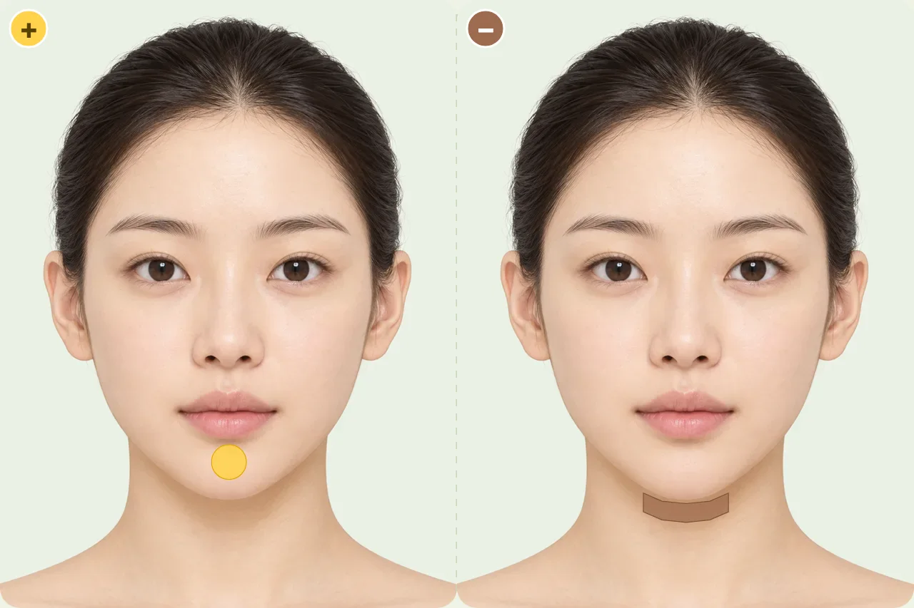
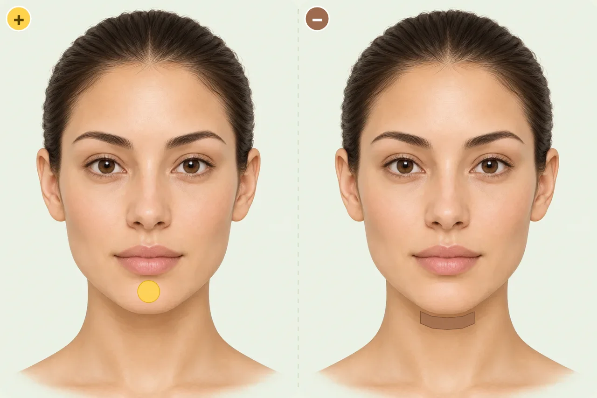
＋ Add: highlight / fill보강: 밝게·채우기補強: 明るく・埋める补强：提亮/填充補強：提亮/填充Reforzar: iluminar / rellenarPerkuat: highlight / isi－ Reduce: shade여유: 음영余裕: 影留白：阴影留白：陰影Suavizar: sombraKurangi: bayangan
＋ When it's Add (+)보강(+)일 때補強(+)のとき判定为补强(+)时判定為補強(+)時Si es Reforzar (+)Jika Perkuat (+)
- A small dot of highlighter on the center of the chin makes it look more forward.턱끝 가운데에 하이라이터를 작게 올려 앞으로 나와 보이게 해요.顎先の中央に小さくハイライトをのせ、前に出て見せます。在下巴中央点一小块高光，让它看起来更向前。在下巴中央點一小塊高光，讓它看起來更向前。Un toque pequeño de iluminador en el centro del mentón lo proyecta hacia delante.Sedikit highlighter di tengah dagu membuatnya tampak lebih maju.
- Keep the chin highlight pea-sized and pair it with a faint shade just under the chin — the projection pops.턱끝 하이라이터는 콩알 크기로, 바로 아래 턱 밑에는 옅은 쉐딩을 함께 넣으면 돌출이 선명해져요.あご先のハイライトは豆粒大。すぐ下のあご裏に薄い影を添えると突出が際立ちます。下巴高光只点豌豆大小，再在下巴底部补一点浅阴影，前凸就清晰了。下巴高光只點豌豆大小，再在下巴底部補一點淺陰影，前凸就清晰了。Iluminador en la barbilla del tamaño de un guisante, con una sombra suave justo debajo: la proyección destaca.Highlighter di dagu sebesar kacang polong, ditambah bayangan tipis tepat di bawah dagu — tonjolan jadi jelas.
－ When it's Reduce (−)여유(−)일 때余裕(−)のとき判定为留白(−)时判定為留白(−)時Si es Suavizar (−)Jika Kurangi (−)
- Contour under the chin to shorten its length and projection.턱끝 아래쪽에 쉐딩을 넣어 길이와 돌출을 눌러 주세요.顎先の下にシェーディングを入れ、長さと突出を抑えます。在下巴下方打阴影，收敛长度和突出感。在下巴下方打陰影，收斂長度和突出感。Aplica contorno bajo el mentón para acortar su largo y proyección.Contour di bawah dagu untuk mengurangi kesan panjang dan tonjolan.
- Skip highlighter on the chin and keep the shade under the jaw, just below the tip.턱끝 하이라이터는 생략하고, 쉐딩은 턱 밑에서 턱끝 바로 아래까지만 넣으세요.あご先のハイライトは省略。影はあご裏からあご先のすぐ下までに。下巴不提亮，阴影只打在下巴底部到下巴尖正下方。下巴不提亮，陰影只打在下巴底部到下巴尖正下方。Omite el iluminador en la barbilla y limita la sombra a bajo la mandíbula, justo debajo de la punta.Lewati highlighter di dagu dan batasi bayangan di bawah rahang, tepat di bawah ujung dagu.
Jawline턱선フェイスライン下颌线下顎線Línea mandibularGaris rahang
JawlineJawlineJawlineJawlineJawlineJawline
What the app measures앱이 재는 것アプリが測るもの应用测量的内容App 測量的內容Qué mide la appYang diukur aplikasiUses the jaw-to-cheekbone width ratio and the gonial angle. A ratio of 0.88 or more, or an angle under 116°, is marked as angular; under 0.70 or over 138° as a soft jawline.턱폭을 광대폭으로 나눈 비율과 하악각으로 봅니다. 비율 0.88 이상이거나 하악각 116° 미만이면 각진 편, 0.70 미만이거나 138° 초과면 턱선이 약한 편으로 표시합니다.顎幅÷頬骨幅の比率と下顎角で見ます。比率0.88以上または角度116°未満は角張った側、0.70未満または138°超はフェイスラインが弱い側として示します。采用下颌宽÷颧宽的比例和下颌角。比例 ≥0.88 或角度 <116° 标为偏方；<0.70 或 >138° 标为下颌线偏弱。採用下頜寬÷顴寬的比例和下頜角。比例 ≥0.88 或角度 <116° 標為偏方；<0.70 或 >138° 標為下頜線偏弱。Usa la proporción anchura mandíbula/pómulos y el ángulo goníaco. Una proporción ≥0,88 o un ángulo <116° se marca como angulosa; <0,70 o >138° como línea mandibular suave.Menggunakan rasio lebar rahang terhadap tulang pipi dan sudut gonial. Rasio 0,88 ke atas atau sudut di bawah 116° ditandai bersudut; di bawah 0,70 atau di atas 138° ditandai garis rahang lemah.
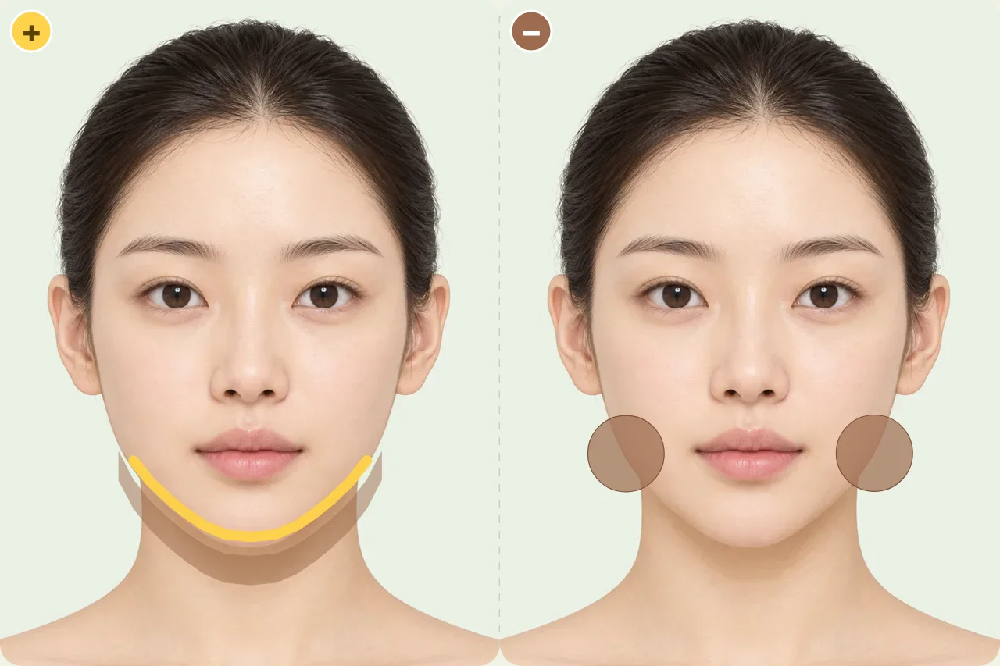
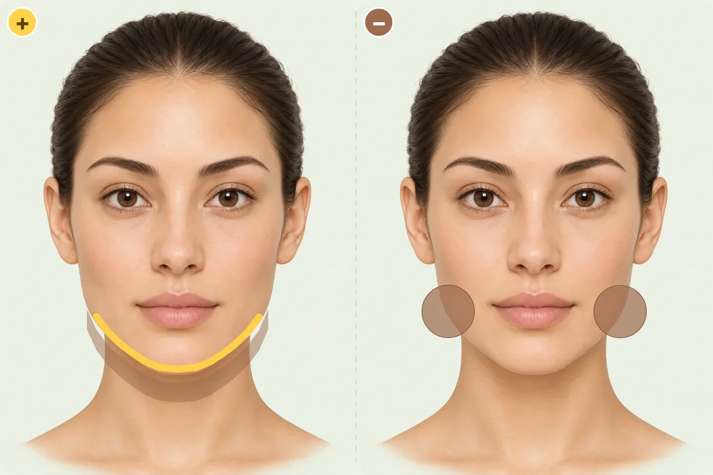
＋ Add: highlight / fill보강: 밝게·채우기補強: 明るく・埋める补强：提亮/填充補強：提亮/填充Reforzar: iluminar / rellenarPerkuat: highlight / isi－ Reduce: shade여유: 음영余裕: 影留白：阴影留白：陰影Suavizar: sombraKurangi: bayangan
＋ When it's Add (+)보강(+)일 때補強(+)のとき判定为补强(+)时判定為補強(+)時Si es Reforzar (+)Jika Perkuat (+)
- Contour below the jawline and highlight just above it to sharpen the line.턱선 아래에 쉐딩을 넣고 턱선 위에 하이라이트를 더하면 선이 또렷해져요.フェイスラインの下にシェーディング、上にハイライトで線をはっきりさせます。下颌线下方打阴影、上方提亮，线条会更清晰。下顎線下方打陰影、上方提亮，線條會更清晰。Contorno bajo la mandíbula e iluminador justo encima definen la línea.Contour di bawah garis rahang dan highlight tepat di atasnya menegaskan garisnya.
- Run the highlight along the jaw from under the ear toward the chin, thin — a thick line enlarges the jaw.턱선 바로 위 하이라이트는 귀 아래에서 턱끝 방향으로 얇게 — 선이 굵으면 턱이 커 보여요.あごのラインの上のハイライトは耳下からあご先へ細く。太いとあごが大きく見えます。下颌线上方的高光从耳下向下巴细细带过，线条粗会显下巴大。下頜線上方的高光從耳下向下巴細細帶過，線條粗會顯下巴大。El iluminador sobre la mandíbula va fino desde bajo la oreja hacia la barbilla; una línea gruesa agranda la mandíbula.Highlight di atas garis rahang dibuat tipis dari bawah telinga ke arah dagu — garis tebal membuat rahang tampak besar.
－ When it's Reduce (−)여유(−)일 때余裕(−)のとき判定为留白(−)时判定為留白(−)時Si es Suavizar (−)Jika Kurangi (−)
- Round out contour on the outer jaw angle to soften the squareness.On a square jaw, blend the shade from the jaw corner down under the jawline and onto the neck — leave the chin itself clean.턱 각 바깥쪽에 쉐딩을 둥글게 넣어 각진 느낌을 부드럽게 해요.エラの外側に丸くシェーディングを入れ、角ばった印象をやわらげます。在下颌角外侧打圆形阴影，柔化方正感。在下頜角外側打圓形陰影，柔化方正感。Aplica contorno redondeado en el ángulo externo de la mandíbula para suavizar.En una mandíbula cuadrada, difumina la sombra desde el ángulo hacia debajo de la mandíbula y el cuello; deja la barbilla limpia.Contour melingkar di sudut rahang luar untuk melembutkan kesan kotak.Pada rahang kotak, baurkan bayangan dari sudut rahang ke bawah garis rahang dan leher — biarkan dagu tetap bersih.
- Shade the jaw corners in a half-circle and blend down into the neck so no edge shows.쉐딩은 턱 각 바깥쪽에 반원으로 넣고, 턱선 아래 목까지 블렌딩해 경계를 없애세요.影はエラの外側に半円状に。あご下から首へぼかして境目を消します。阴影在下颌角外侧打半圆，并向颈部晕开，不留边界。陰影在下頜角外側打半圓，並向頸部暈開，不留邊界。Sombrea los ángulos de la mandíbula en semicírculo y difumina hacia el cuello para que no quede borde.Beri bayangan setengah lingkaran di sudut rahang dan baurkan ke leher agar tidak ada batas.